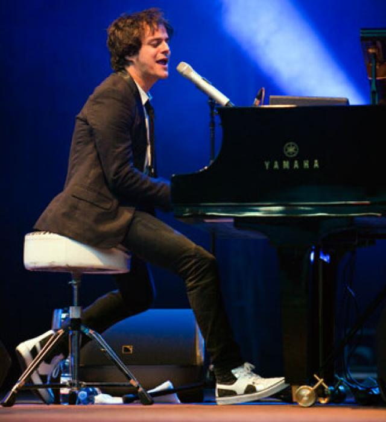
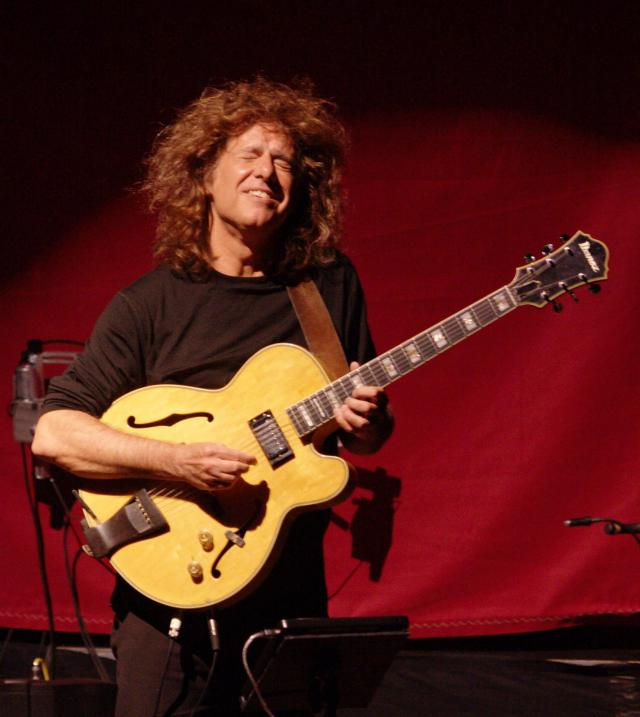

Jamie Cullum
Jamie Cullum (Essex, 20 de agosto de 1979), cantante y pianista inglés de jazz y pop.
Se crio en Hullavington, Whiltshire. Su madre, Yvonne, es una secretaria de origen anglo-birmano; y su padre John Cullum, trabajaba en finanzas. Su abuelo paterno fue oficial de la armada inglesa, mientras que su abuela paterna fue una judía refugiada de Prusia que cantaba en discos en Berlín; Cullum la ve como su «icono cultural». Creció en Hullavington, Wiltshire pero actualmente reside en North West London.
Empezó su carrera musical a los dieciséis años, tocando en bares, clubes y hoteles de su pueblo natal. Años más tarde se trasladó a la Universidad de Reading, para estudiar cine y literatura inglesa. Fue durante esta etapa cuando comenzó a componer y a tocar su propia música para acompañar los cortometrajes que hacía como parte de su curso. Además, Cullum aprovechaba para dar algunos conciertos con su grupo Jamie Cullum Trío, de los cuales nació un primer disco titulado "Heard it all before", en 1999, del cual sólo se hicieron 500 copias; debido a su rareza, copias originales de este disco llegan a ser vendidas hasta por 1000£ en eBay. Gracias al éxito de su primer disco, Jamie Cullum fue invitado a participar en el disco de Geoff Gascoyne Songs of the summer. Después logró sacar un segundo CD, "Pointless Nostalgic", el cual llamó la atención de personalidades de la talla de Michael Jackson, entre otros.
Se crio en Hullavington, Whiltshire. Su madre, Yvonne, es una secretaria de origen anglo-birmano; y su padre John Cullum, trabajaba en finanzas. Su abuelo paterno fue oficial de la armada inglesa, mientras que su abuela paterna fue una judía refugiada de Prusia que cantaba en discos en Berlín; Cullum la ve como su «icono cultural». Creció en Hullavington, Wiltshire pero actualmente reside en North West London.
Empezó su carrera musical a los dieciséis años, tocando en bares, clubes y hoteles de su pueblo natal. Años más tarde se trasladó a la Universidad de Reading, para estudiar cine y literatura inglesa. Fue durante esta etapa cuando comenzó a componer y a tocar su propia música para acompañar los cortometrajes que hacía como parte de su curso. Además, Cullum aprovechaba para dar algunos conciertos con su grupo Jamie Cullum Trío, de los cuales nació un primer disco titulado "Heard it all before", en 1999, del cual sólo se hicieron 500 copias; debido a su rareza, copias originales de este disco llegan a ser vendidas hasta por 1000£ en eBay. Gracias al éxito de su primer disco, Jamie Cullum fue invitado a participar en el disco de Geoff Gascoyne Songs of the summer. Después logró sacar un segundo CD, "Pointless Nostalgic", el cual llamó la atención de personalidades de la talla de Michael Jackson, entre otros.


Pat Metheny
Pat Metheny (léase Pat "Mezíni") es un guitarrista estadounidense de jazz, reconocido como uno de los más grandes músicos de este género. Ha ganado innumerables premios y reconocimientos, entre ellos 20 Grammy.
Patrick Bruce Metheny nació en Lee's Summit, Missouri (Estados Unidos) el 12 de agosto de 1954 en una familia de músicos. Empezó a tocar la trompeta a los 8 años por influencia de su hermano Mike Metheny, pero se cambió a la guitarra a los 12. A los 15 estaba trabajando con los mejores músicos de jazz en Kansas City, y adquiriría así valiosa experiencia en los escenarios a una muy temprana edad. Recibió una beca para estudiar música en la University of Miami, y posteriormente en Boston, donde llegó a ser profesor de la Berklee College of Music (una de las escuelas de música con más prestigio de todo el mundo), dando clases a alumnos como Mike Stern o Al DiMeola. Allí conoce a Gary Burton que le incorporó a su banda durante 3 años, mostrando ya su forma de tocar moderna, pero conectando con el jazz más tradicional, swing, y blues. Su debut discográfico fue en 1974, en el disco "Jaco", de la mano de otro debutante: Jaco Pastorius, junto a Paul Bley al piano eléctrico y Bruce Ditmas a la batería.1 A lo largo de su carrera, Pat Metheny ha seguido redefiniendo el género usando nuevas tecnologías y trabajando constantemente para evolucionar el potencial de su instrumento.
En 1976, edita su primer álbum instrumental, Bright Size Life con el genial Jaco Pastorius, (nombre original John Francis Pastorius) al fretless bass fender (bajo sin trastes), reinventando el tradicional sonido de guitarra de jazz. Un año más tarde conoce a Lyle Mays con el que tras grabar un disco, decide montar un grupo: el Pat Metheny Group.
Con los años, ha tocado con artistas tan diversos como Antonio Carlos Jobim, Steve Reich, Ornette Coleman, Herbie Hancock, John Scofield, Jim Hall, Michael Brecker, Milton Nascimento, Pedro Aznar, Toots Thielemans, Enrique Morente, David Bowie y Carlos Santana. Ha formado equipo con el teclista Lyle Mays durante más de veinte años (una asociación que ha sido comparada a la de Lennon con McCartney y a la de Duke Ellington con Billy Strayhorn por los críticos y oyentes). La obra de Metheny incluye composiciones para guitarra solista, para pequeños conjuntos, para instrumentos eléctricos y acústicos, para grandes orquestas, con ajustes que van desde el jazz hasta el rock moderno y clásico.2
Además de ser un dotado músico, Metheny ha participado también en el ámbito académico como profesor de música. A los 18 años, fue el profesor más joven de la historia en la Universidad de Miami. A los 19, se convirtió en el profesor más joven de la historia en Berklee College of Music, donde también recibiría un doctorado honoris causa veinte años después. También ha enseñado en academias de música de todo el mundo, desde el Real Conservatorio de los Países Bajos al Instituto de Jazz Thelonious Monk, y en escuelas de Asia y de América del Sur.3
Pat Metheny ha sido un verdadero pionero en el ámbito de la música electrónica, y fue uno de los primeros músicos de jazz en usar el sintetizador como un instrumento musical. Años antes de la invención de la tecnología MIDI, Metheny usaba la Synclavier como herramienta de composición. También ha participado en el desarrollo de varios nuevos tipos de guitarras, como la guitarra acústica soprano, la "Pikasso" de 42 cuerdas, su guitarra de jazz Ibanez PM-100, y una variedad de instrumentos personalizados.
A lo largo de su trayectoria ha ganado innumerables premios y reconocimientos, como encuestas como "Mejor guitarrista de Jazz" y premios como tres discos de platino por "Still Life (Talking)", "Letter from Home" y "Secret Story". También ha ganado 20 Grammy repartidos en 12 diferentes categorías, incluyendo mejor álbum de rock instrumental, mejor disco de jazz contemporáneo, mejor solo de jazz instrumental y mejor composición instrumental. Con el Pat Metheny Group ganó siete consecutivos. Metheny ha pasado la mayor parte de su vida de gira, con una media de 120 a 240 conciertos al año desde 1974.4 En el momento de escribir esto, continúa siendo una de las estrellas más brillantes del jazz y de la música en general del mundo, dedicando su tiempo a sus dos proyectos propios y con colaboraciones con otros grandes músicos. El 9 de febrero de 2014 recibió un premio Goya a la mejor música original por la película "Vivir es fácil con los ojos cerrados".
Patrick Bruce Metheny nació en Lee's Summit, Missouri (Estados Unidos) el 12 de agosto de 1954 en una familia de músicos. Empezó a tocar la trompeta a los 8 años por influencia de su hermano Mike Metheny, pero se cambió a la guitarra a los 12. A los 15 estaba trabajando con los mejores músicos de jazz en Kansas City, y adquiriría así valiosa experiencia en los escenarios a una muy temprana edad. Recibió una beca para estudiar música en la University of Miami, y posteriormente en Boston, donde llegó a ser profesor de la Berklee College of Music (una de las escuelas de música con más prestigio de todo el mundo), dando clases a alumnos como Mike Stern o Al DiMeola. Allí conoce a Gary Burton que le incorporó a su banda durante 3 años, mostrando ya su forma de tocar moderna, pero conectando con el jazz más tradicional, swing, y blues. Su debut discográfico fue en 1974, en el disco "Jaco", de la mano de otro debutante: Jaco Pastorius, junto a Paul Bley al piano eléctrico y Bruce Ditmas a la batería.1 A lo largo de su carrera, Pat Metheny ha seguido redefiniendo el género usando nuevas tecnologías y trabajando constantemente para evolucionar el potencial de su instrumento.
En 1976, edita su primer álbum instrumental, Bright Size Life con el genial Jaco Pastorius, (nombre original John Francis Pastorius) al fretless bass fender (bajo sin trastes), reinventando el tradicional sonido de guitarra de jazz. Un año más tarde conoce a Lyle Mays con el que tras grabar un disco, decide montar un grupo: el Pat Metheny Group.
Con los años, ha tocado con artistas tan diversos como Antonio Carlos Jobim, Steve Reich, Ornette Coleman, Herbie Hancock, John Scofield, Jim Hall, Michael Brecker, Milton Nascimento, Pedro Aznar, Toots Thielemans, Enrique Morente, David Bowie y Carlos Santana. Ha formado equipo con el teclista Lyle Mays durante más de veinte años (una asociación que ha sido comparada a la de Lennon con McCartney y a la de Duke Ellington con Billy Strayhorn por los críticos y oyentes). La obra de Metheny incluye composiciones para guitarra solista, para pequeños conjuntos, para instrumentos eléctricos y acústicos, para grandes orquestas, con ajustes que van desde el jazz hasta el rock moderno y clásico.2
Además de ser un dotado músico, Metheny ha participado también en el ámbito académico como profesor de música. A los 18 años, fue el profesor más joven de la historia en la Universidad de Miami. A los 19, se convirtió en el profesor más joven de la historia en Berklee College of Music, donde también recibiría un doctorado honoris causa veinte años después. También ha enseñado en academias de música de todo el mundo, desde el Real Conservatorio de los Países Bajos al Instituto de Jazz Thelonious Monk, y en escuelas de Asia y de América del Sur.3
Pat Metheny ha sido un verdadero pionero en el ámbito de la música electrónica, y fue uno de los primeros músicos de jazz en usar el sintetizador como un instrumento musical. Años antes de la invención de la tecnología MIDI, Metheny usaba la Synclavier como herramienta de composición. También ha participado en el desarrollo de varios nuevos tipos de guitarras, como la guitarra acústica soprano, la "Pikasso" de 42 cuerdas, su guitarra de jazz Ibanez PM-100, y una variedad de instrumentos personalizados.
A lo largo de su trayectoria ha ganado innumerables premios y reconocimientos, como encuestas como "Mejor guitarrista de Jazz" y premios como tres discos de platino por "Still Life (Talking)", "Letter from Home" y "Secret Story". También ha ganado 20 Grammy repartidos en 12 diferentes categorías, incluyendo mejor álbum de rock instrumental, mejor disco de jazz contemporáneo, mejor solo de jazz instrumental y mejor composición instrumental. Con el Pat Metheny Group ganó siete consecutivos. Metheny ha pasado la mayor parte de su vida de gira, con una media de 120 a 240 conciertos al año desde 1974.4 En el momento de escribir esto, continúa siendo una de las estrellas más brillantes del jazz y de la música en general del mundo, dedicando su tiempo a sus dos proyectos propios y con colaboraciones con otros grandes músicos. El 9 de febrero de 2014 recibió un premio Goya a la mejor música original por la película "Vivir es fácil con los ojos cerrados".